Candidate List 20260918Last night — ZTF: 3,186 passed basic cuts (95 young) · LSST: 0 passed basic cuts (0 young)Previous Day Next Day
Section 1: New Sources (age<1d) Section 2: Old (1-5d) sources observed last nightplaceholder
Section 1: New Afterglow/FBOT Cands Last Night (1)
1. [ZTF] ZTF26abvsgux (Afterglow?FBOT?) [Back to Top] [Share] [Trigger Swift] [Fritz Alert] [Fritz Source] [Lasair]RA, Dec: 277.11279, 56.13023 18h28m27.07s, 56d 7m48.82sGalactic (l, b): 85.07955, 25.35786 ext(g-r) = 0.042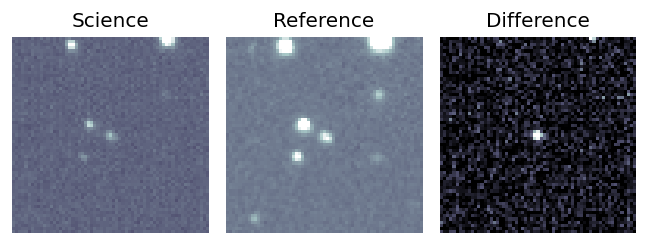
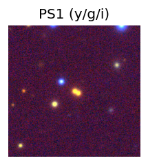
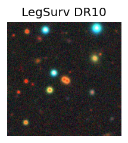
TESS: Sectors [ 14 15 16 17 18 19 20 21 22 23 24 25 26 40 41 47 48 49
50 51 52 53 54 55 56 57 58 59 60 73 74 75 77 78 79 80
81 82 83 84 85 86 117 118 119 120 121]
PS1: 0 sources in 3 arcsec
LegacySurvey: 1 sources in 3 arcsec Closest: d = 0.48 arcsec, 196.5 deg (east of north) photoz=0.41 (68% bounds 0.28, 0.46), type=PSF peak abs mag (ext. corrected) = -22.89 (68% bounds -21.89, -23.14)
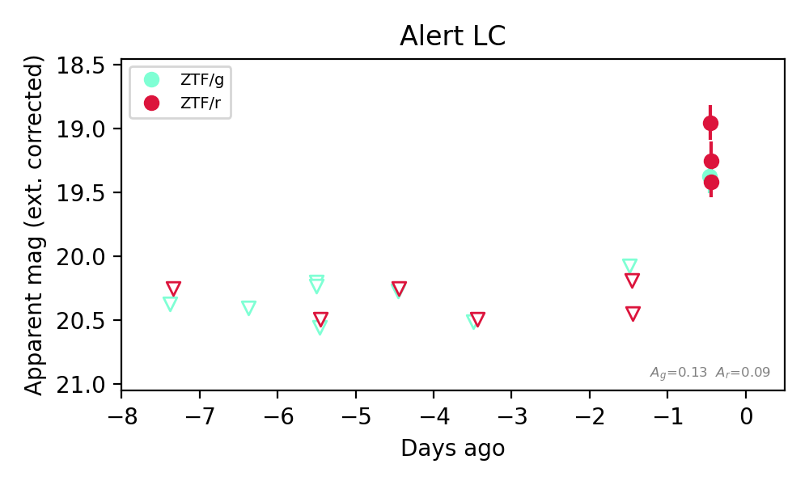
Extinction-corrected gr color:
From alerts: 0.15 +/- 0.15 mag
Consistent with synchrotron, g-r>0!
Rise Rate:
g: 0.69 mag/day
r: 1.5 mag/day
Fade Rate:
Section 2: Older Sources Observed Last Night (12)
0. [ZTF] ZTF26abuejjz (FBOT?) [Back to Top] [Share] [Trigger Swift] [Fritz Alert] [Fritz Source] [Lasair]RA, Dec: 29.04834, 37.10774 1h56m11.60s, 37d 6m27.85sGalactic (l, b): 137.01709, -23.98652 ext(g-r) = 0.093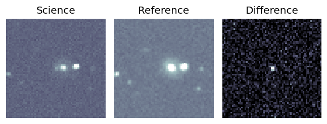
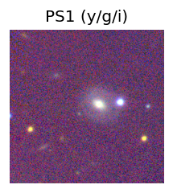

TESS: Sectors [18 58 85]
NED photo-z only: WISEA J015611.21+370628.2 (G, 4.6″) z=0.0808 [zflag PUN] — not used for peak abs mag
PS1: 1 source in 3 arcsec Closest: d = 4.39 arcsec photoz=0.12+/-0.01 peak abs mag = -19.53
LegacySurvey: 0 sources in 3 arcsec
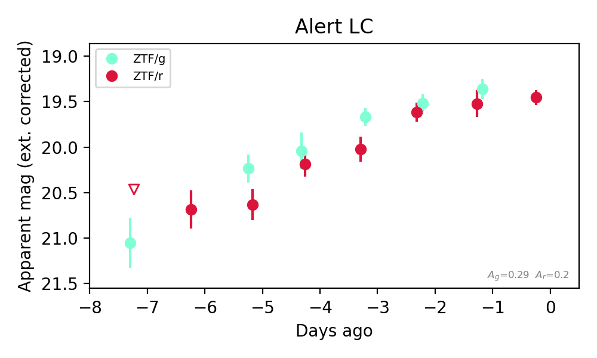
Extinction-corrected gr color:
From alerts: -0.16 +/- 0.18 mag
Consistent with synchrotron, g-r>0!
Rise Rate:
g: 0.24 mag/day
r: 0.21 mag/day
Fade Rate:
1. [ZTF] ZTF26abtjult (Afterglow?) [Back to Top] [Share] [Trigger Swift] [Fritz Alert] [Fritz Source] [Lasair]RA, Dec: 1.69436, 8.42604 0h 6m46.65s, 8d25m33.76sGalactic (l, b): 104.44588, -52.83528 ext(g-r) = 0.152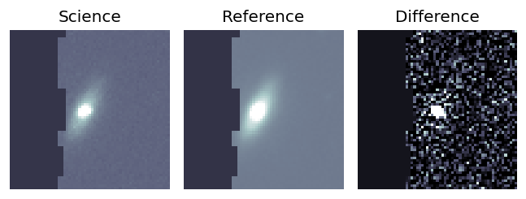
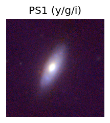
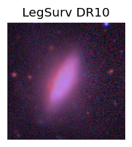
TESS: Sectors [42 43 70]
SDSS (<15 kpc):Found SDSS phot-z: z=0.03; peak abs mag = -18.56
NED host (10 arcsec):Found NGC 7835 (G, 2.1″); NED spec-z: z=0.0395 [zflag SLS]; peak abs mag = -19.42
PS1: 0 sources in 3 arcsec
LegacySurvey: 1 sources in 3 arcsec Closest: d = 2.03 arcsec, 93.3 deg (east of north) photoz=0.03 (68% bounds 0.02, 0.04), type=SER peak abs mag (ext. corrected) = -18.79 (68% bounds -18.34, -19.18)
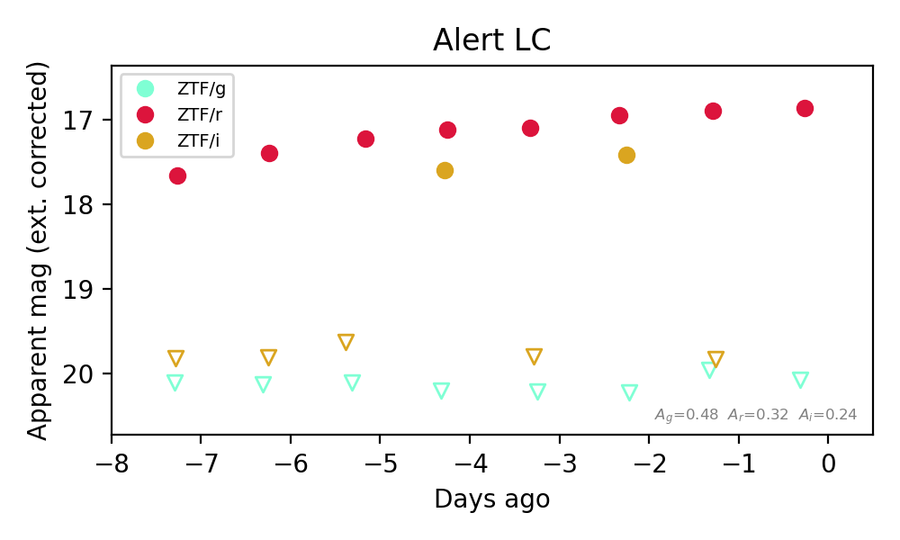
Extinction-corrected gr color:
From alerts: 3.22 +/- 99 mag
Extinction-corrected gi color:
From alerts: 2.81 +/- 99 mag
Extinction-corrected ri color:
From alerts: -2.94 +/- 99 mag
Rise Rate:
r: 0.1 mag/day
i: 2.3 mag/day
Fade Rate:
i: 2.45 mag/day
2. [ZTF] ZTF26abuktjp (Afterglow?) [Back to Top] [Share] [Trigger Swift] [Fritz Alert] [Fritz Source] [Lasair]RA, Dec: 312.71175, 64.34756 20h50m50.82s, 64d20m51.20sGalactic (l, b): 100.29855, 12.66549 ext(g-r) = 0.55


TESS: Sectors [ 15 17 18 24 56 57 58 76 77 78 83 84 85 121]
PS1: 1 source in 3 arcsec Closest: d = 3.55 arcsec photoz=0.04+/-0.03 peak abs mag = -19.15
LegacySurvey: 0 sources in 3 arcsec

Extinction-corrected gr color:
From alerts: 0.1 +/- 0.29 mag
Consistent with synchrotron, g-r>0!
Rise Rate:
g: 1.97 mag/day
r: 0.24 mag/day
Fade Rate:
g: 0.45 mag/day
3. [ZTF] ZTF26abvcyoo (FBOT?) [Back to Top] [Share] [Trigger Swift] [Fritz Alert] [Fritz Source] [Lasair]RA, Dec: 73.08491, 5.15068 4h52m20.38s, 5d 9m2.44sGalactic (l, b): 193.47362, -23.53051 ext(g-r) = 0.098


TESS: Sectors [ 5 32 98 110]
NED host (10 arcsec):Found CGCG 420-010 (G, 5.4″); NED spec-z: z=0.0298 [zflag S1L]; peak abs mag = -18.24
PS1: 0 sources in 3 arcsec
LegacySurvey: 1 sources in 3 arcsec Closest: d = 1.55 arcsec, 41.2 deg (east of north) photoz=0.08 (68% bounds 0.06, 0.12), type=SER peak abs mag (ext. corrected) = -20.44 (68% bounds -19.8, -21.31)

Extinction-corrected ri color:
From alerts: -0.19 +/- 0.07 mag
Rise Rate:
g: 0.98 mag/day
r: 0.39 mag/day
i: 0.29 mag/day
Fade Rate:
4. [ZTF] ZTF26abuxdll (Afterglow?) [Back to Top] [Share] [Trigger Swift] [Fritz Alert] [Fritz Source] [Lasair]RA, Dec: 294.36855, 41.01744 19h37m28.45s, 41d 1m2.78sGalactic (l, b): 74.37197, 9.51329 ext(g-r) = 0.182


TESS: Sectors [ 14 15 40 41 54 55 74 75 81 82 119 120]
PS1: 0 sources in 3 arcsec
LegacySurvey: 0 sources in 3 arcsec

Extinction-corrected gr color:
From alerts: 0.16 +/- 0.17 mag
Consistent with synchrotron, g-r>0!
Rise Rate:
g: 0.95 mag/day
r: 0.66 mag/day
Fade Rate:
5. [ZTF] ZTF26abvdlgm (FBOT?) [Back to Top] [Share] [Trigger Swift] [Fritz Alert] [Fritz Source] [Lasair]RA, Dec: 298.32958, 0.3879 19h53m19.10s, 0d23m16.43sGalactic (l, b): 40.4769, -13.5503 ext(g-r) = 0.2


TESS: Sectors [54 81]
SDSS (<15 kpc):Found SDSS phot-z: z=0.18; peak abs mag = -20.44
PS1: 0 sources in 3 arcsec
LegacySurvey: 0 sources in 3 arcsec

Extinction-corrected gr color:
From alerts: -0.14 +/- 0.23 mag
Extinction-corrected gi color:
From alerts: -0.18 +/- 0.3 mag
Extinction-corrected ri color:
From alerts: -0.2 +/- 0.3 mag
Consistent with synchrotron, g-r>0!
Rise Rate:
g: 0.17 mag/day
r: 0.3 mag/day
i: 0.23 mag/day
Fade Rate:
6. [ZTF] ZTF26abvfdbc (FBOT?) [Back to Top] [Share] [Trigger Swift] [Fritz Alert] [Fritz Source] [Lasair]RA, Dec: 352.82363, 1.48303 23h31m17.67s, 1d28m58.90sGalactic (l, b): 85.73552, -55.49161 WARNING: 4.21 deg from ecliptic plane ext(g-r) = 0.049


TESS: Sectors [42 70 92]
SDSS (<15 kpc):Found SDSS phot-z: z=0.46; peak abs mag = -22.09
PS1: 0 sources in 3 arcsec
LegacySurvey: 1 sources in 3 arcsec Closest: d = 0.75 arcsec, 253.3 deg (east of north) photoz=0.46 (68% bounds 0.32, 0.56), type=REX peak abs mag (ext. corrected) = -22.09 (68% bounds -21.17, -22.61)

Extinction-corrected gr color:
From alerts: -0.29 +/- 0.3 mag
Extinction-corrected gi color:
From alerts: -0.27 +/- 0.31 mag
Extinction-corrected ri color:
From alerts: 0.02 +/- 0.31 mag
Consistent with synchrotron, g-r>0!
Rise Rate:
g: 0.2 mag/day
r: 0.2 mag/day
Fade Rate:
7. [ZTF] ZTF26abvldya (FBOT?) [Back to Top] [Share] [Trigger Swift] [Fritz Alert] [Fritz Source] [Lasair]RA, Dec: 276.49163, 26.00299 18h25m57.99s, 26d 0m10.78sGalactic (l, b): 54.03558, 16.7759 ext(g-r) = 0.106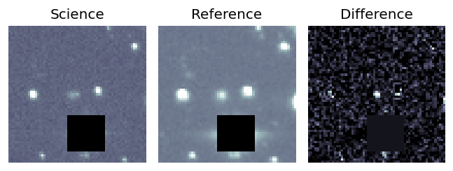
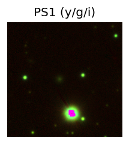

TESS: Sectors [ 26 40 53 74 118 119]
PS1: 1 source in 3 arcsec Closest: d = 2.74 arcsec photoz=0.14+/-0.02 peak abs mag = -19.57
LegacySurvey: 0 sources in 3 arcsec
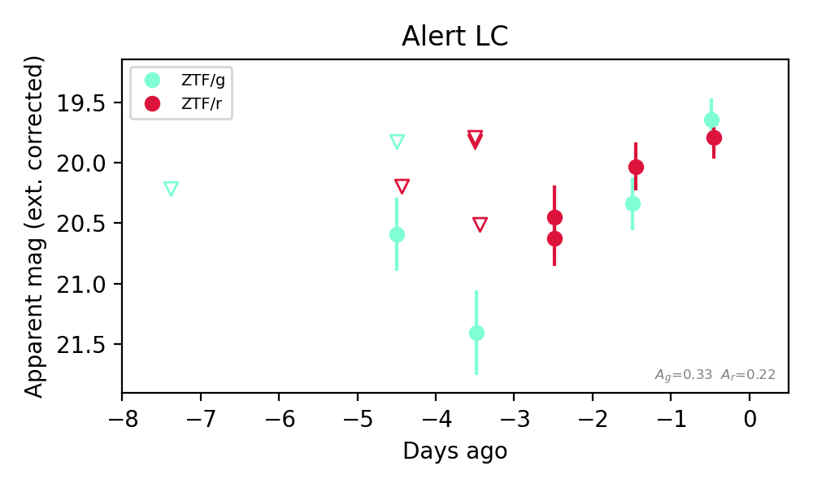
Extinction-corrected gr color:
From alerts: -0.15 +/- 0.25 mag
Consistent with synchrotron, g-r>0!
Rise Rate:
g: 0.32 mag/day
r: 0.37 mag/day
Fade Rate:
8. [ZTF] ZTF26abvtbit (FBOT?) [Back to Top] [Share] [Trigger Swift] [Fritz Alert] [Fritz Source] [Lasair]RA, Dec: 288.73766, 51.4116 19h14m57.04s, 51d24m41.76sGalactic (l, b): 82.36716, 17.43166 ext(g-r) = 0.087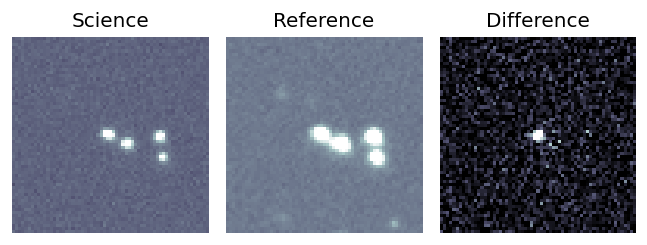
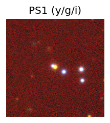
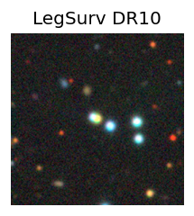
TESS: Sectors [ 14 15 26 40 41 53 54 55 56 73 74 75 76 80 81 82 83 120
121]
PS1: 0 sources in 3 arcsec
LegacySurvey: 1 sources in 3 arcsec Closest: d = 0.30 arcsec, 56.8 deg (east of north) photoz=0.14 (68% bounds 0.12, 0.16), type=PSF peak abs mag (ext. corrected) = -20.57 (68% bounds -20.26, -20.88)
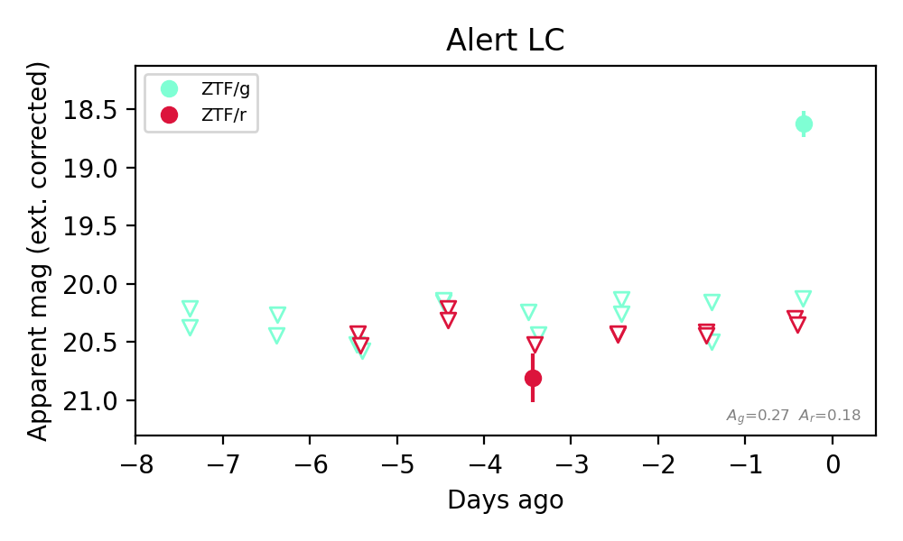
Extinction-corrected gr color:
From alerts: -1.72 +/- 99 mag
Rise Rate:
g: 1.76 mag/day
Fade Rate:
9. [ZTF] ZTF26abvwbge (FBOT?) [Back to Top] [Share] [Trigger Swift] [Fritz Alert] [Fritz Source] [Lasair]RA, Dec: 27.88344, 21.82214 1h51m32.03s, 21d49m19.69sGalactic (l, b): 140.95391, -38.93735 ext(g-r) = 0.072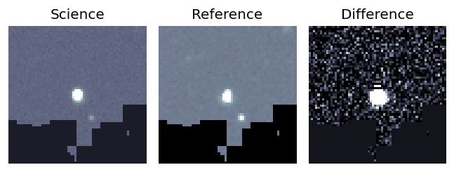
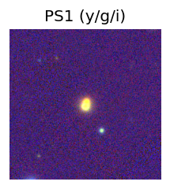
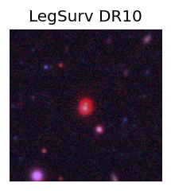
TESS: Sectors [17 42 43 70 71]
PS1: 0 sources in 3 arcsec
LegacySurvey: 1 sources in 3 arcsec Closest: d = 0.37 arcsec, 343.0 deg (east of north) photoz=0.07 (68% bounds 0.01, 0.25), type=PSF peak abs mag (ext. corrected) = -22.02 (68% bounds -17.97, -24.93)
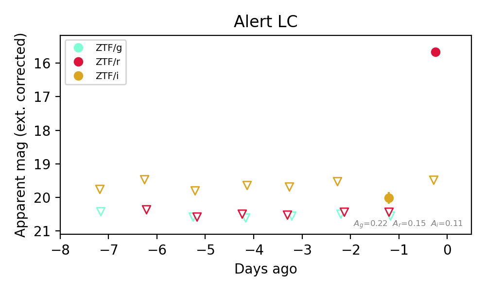
Extinction-corrected gi color:
From alerts: 0.54 +/- 99 mag
Extinction-corrected ri color:
From alerts: -3.81 +/- 99 mag
Rise Rate:
r: 4.98 mag/day
Fade Rate:
10. [ZTF] ZTF26abvwzvd (Afterglow?) [Back to Top] [Share] [Trigger Swift] [Fritz Alert] [Fritz Source] [Lasair]RA, Dec: 339.93273, -11.29562 22h39m43.86s, -11d-17m-44.24sGalactic (l, b): 53.59266, -55.27241 WARNING: -2.63 deg from ecliptic plane ext(g-r) = 0.074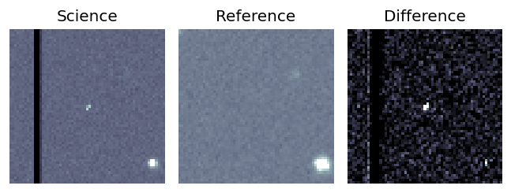
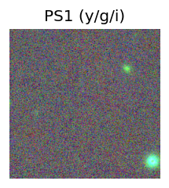
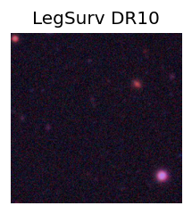
TESS: Sectors [42 92]
PS1: 0 sources in 3 arcsec
LegacySurvey: 1 sources in 3 arcsec Closest: d = 5.00 arcsec, 11.0 deg (east of north) photoz=0.62 (68% bounds 0.46, 1.06), type=REX peak abs mag (ext. corrected) = -24.34 (68% bounds -23.57, -25.79)
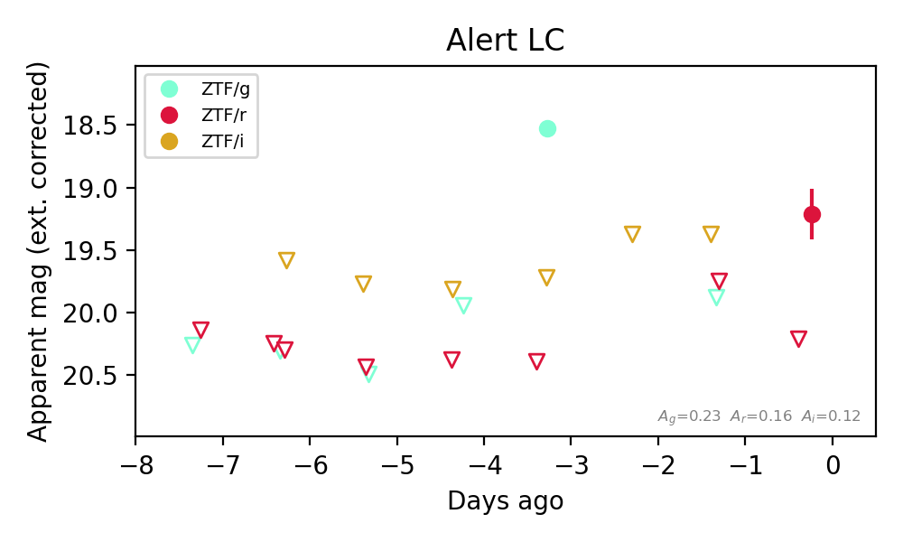
Extinction-corrected gr color:
From alerts: -1.87 +/- 99 mag
Extinction-corrected gi color:
From alerts: -1.2 +/- 99 mag
Rise Rate:
g: 1.47 mag/day
r: 6.28 mag/day
Fade Rate:
g: 0.7 mag/day
11. [ZTF] ZTF26abvyced (FBOT?) [Back to Top] [Share] [Trigger Swift] [Fritz Alert] [Fritz Source] [Lasair]RA, Dec: 79.18886, 30.18229 5h16m45.33s, 30d10m56.24sGalactic (l, b): 175.51415, -4.5669 ext(g-r) = 0.513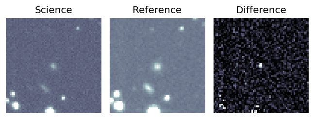
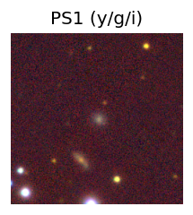

TESS: Sectors [19 43 44 45 71]
PS1: 1 source in 3 arcsec Closest: d = 0.94 arcsec photoz=0.11+/-0.01 peak abs mag = -19.53
LegacySurvey: 0 sources in 3 arcsec
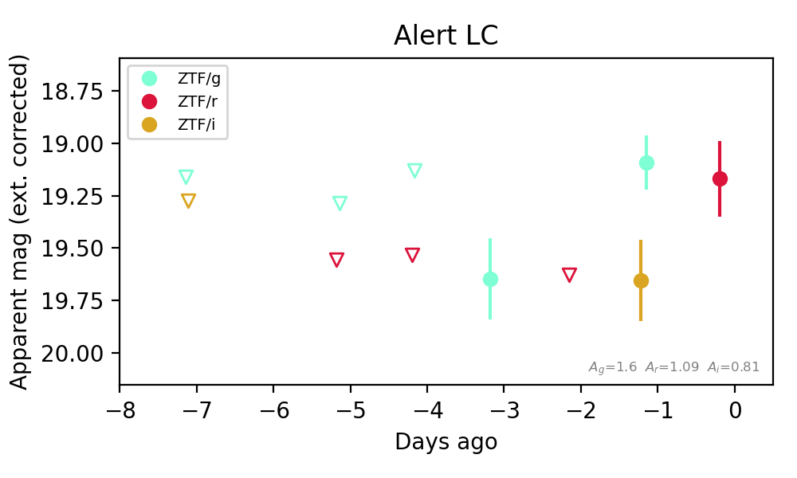
Extinction-corrected gi color:
From alerts: -0.56 +/- 0.23 mag
Rise Rate:
g: 0.27 mag/day
r: 0.23 mag/day
Fade Rate: